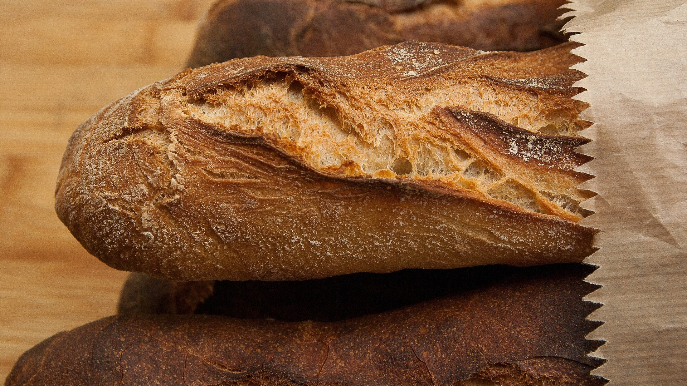
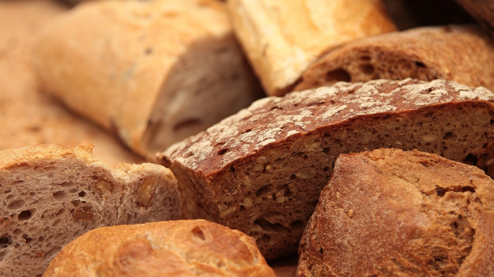
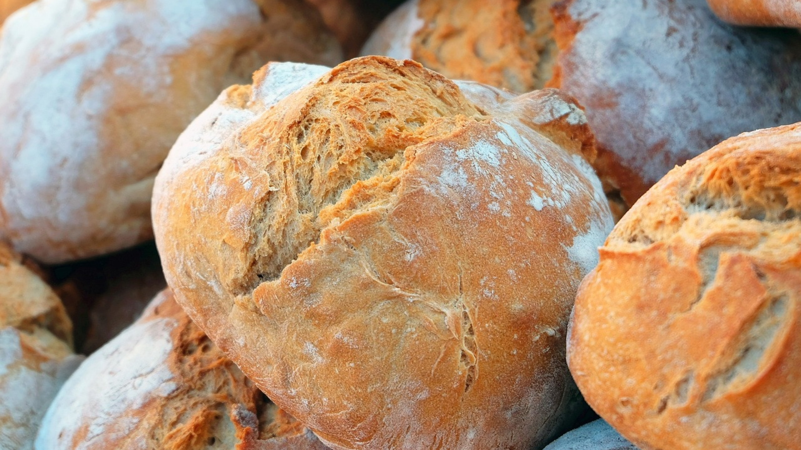
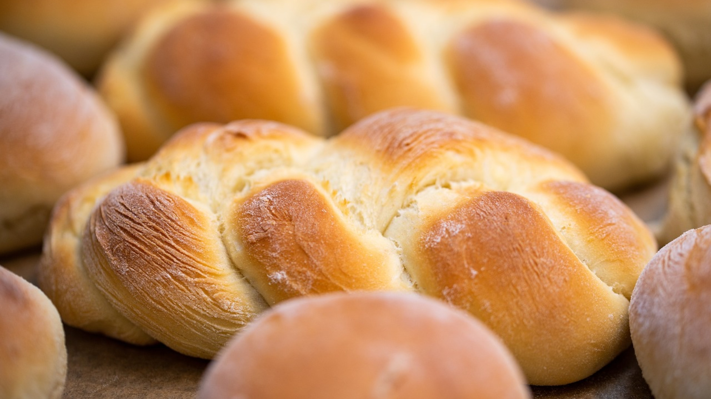

Il était une fois, dans un lointain pays, un petit grain de blé qui rêvait de devenir un grand pain. Il a été planté dans un champ, a été arrosé et a grandi pour devenir une belle épis de blé. Le petit grain de blé a été récolté et a été transporté dans un moulin où il a été transformé en farine. Puis, cette farine a été mélangée à de l'eau et à de la levure, pétrie et enfin cuite pour devenir un délicieux pain croustillant. Ainsi, notre petit grain de blé a finalement réalisé son rêve de devenir un grand pain qui a été mangé avec joie et apprécié par des gens de tous les horizons. Et depuis lors, les grains de blé du monde entier rêvent de suivre ses traces pour devenir des pains célèbres le pain peut vous aider à garder la ligne en vous remplissant de glucides et en vous empêchant de grignoter des aliments moins sains. De plus, le pain contient des fibres qui peuvent aider à réguler votre système digestif, vous permettant de rester régulier. Et si vous cherchez à améliorer votre humeur, le simple fait de sentir l'odeur du pain frais sortant du four peut vous mettre de bonne humeur. Enfin, le pain est un excellent support pour les sandwichs, qui sont une façon pratique et saine de manger tous les nutriments dont vous avez besoin. Alors, n'oubliez pas les avantages du pain pour votre santé, mais comme pour tout, mangez-le avec modération !
   